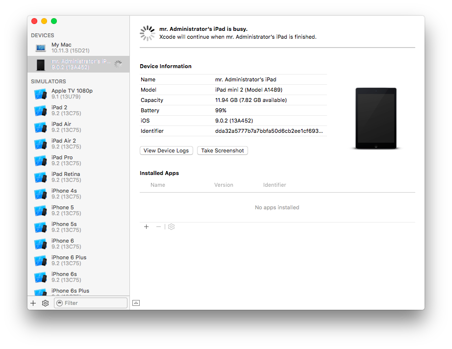
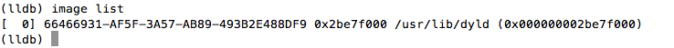
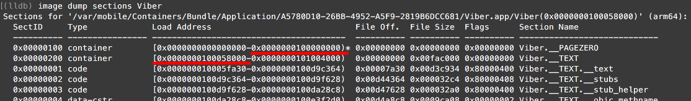
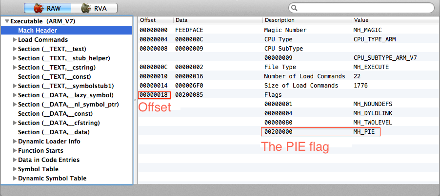
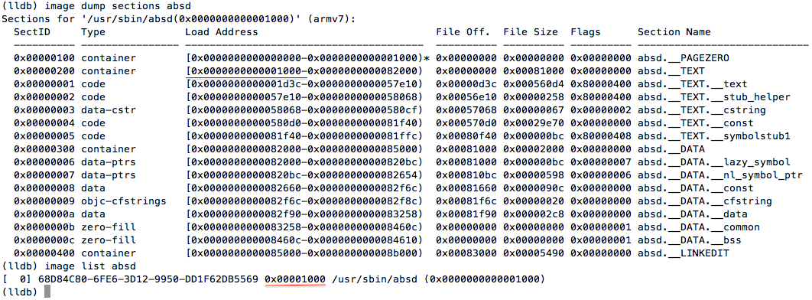

This is an extended version of the guide I posted in 2014. It covers iOS 7-9 for ARM32 and 64 bit processors. Please note that LLDB is quite buggy, so some things may not work for you, or work in a wrong way. Shit happens, sorry.
You need:
debugserverExtract debugserver from XCode. On Mac, run in console:
$ ls /Applications/Xcode.app/Contents/Developer/Platforms/iPhoneOS.platform/DeviceSupport/
As result, you see available iOS versions in your console, e.g.
6.0 7.0 8.0 8.2 8.4 9.1
6.1 7.1 8.1 8.3 9.0 9.2 (13C75)
Choose the iOS version running on your iOS device. Let it be 7.1. Extract debugserver for iOS 7.1:
$ hdiutil attach /Applications/Xcode.app/Contents/Developer/Platforms/iPhoneOS.platform/DeviceSupport/7.1/DeveloperDiskImage.dmg
$ cp /Volumes/DeveloperDiskImage/usr/bin/debugserver ./
Note! debugserver is so-called “universal binary” with MachO fat header, it contains both ARM32 and ARM64 binaries, so don’t care bitwise. ■
Now you have debugserver binary in your current directory on your Mac.
debugserverSign debugserver with the following command
$ codesign -s - --entitlements entitlements.plist -f debugserver
where entitlements.plist is a text file:
<?xml version="1.0" encoding="UTF-8"?>
<!DOCTYPE plist PUBLIC "-//Apple//DTD PLIST 1.0//EN" "http://www.apple.com/DTDs/ PropertyList-1.0.dtd">
<plist version="1.0">
<dict>
<key>com.apple.springboard.debugapplications</key> <true/>
<key>run-unsigned-code</key> <true/>
<key>get-task-allow</key> <true/>
<key>task_for_pid-allow</key> <true/>
</dict>
</plist>
You can download entitlements.plist here.
debugserver to iOS deviceFind IP of your iOS device, e.g. 192.168.0.101. Copy debugserver to your iOS device:
$ scp ./debugserver root@192.168.0.101:/usr/bin/
If you use usbmuxd (see “Debugging through USB” for more info), you can run
$ scp -P 2222 ./debugserver root@localhost:/usr/bin/
Start “Settings” on your iOS device. SSH your the device and run in SSH console:
# ps ax
As result, you see the list of running process. Check “Settings”, it should appear in the list as Preferences. Attach debugserver to the process:
# debugserver *:6666 -a Preferences
As result, you see in SSH console:
debugserver-310.2 for armv7.
Attaching to process Preferences...
Listening to port 6666 for a connection from *...
Now, open a new Mac console and run
$ lldb
(lldb) platform select remote-ios
(lldb) process connect connect://192.168.0.101:6666
(we still assume iOS device IP is 192.168.0.101)
Wait 1-2 min and, finally, you’ll get the result
Process 400 stopped
* thread #1: tid = 0x118f, 0x38bfda58 libsystem_kernel.dylib`mach_msg_trap + 20, queue = 'com.apple.main-thread', stop reason = signal SIGSTOP
frame #0: 0x38bfda58 libsystem_kernel.dylib`mach_msg_trap + 20
libsystem_kernel.dylib`mach_msg_trap:
-> 0x38bfda58 <+20>: pop {r4, r5, r6, r8}
0x38bfda5c <+24>: bx lr
libsystem_kernel.dylib`mach_msg_overwrite_trap:
0x38bfda60 <+0>: mov r12, sp
0x38bfda64 <+4>: push {r4, r5, r6, r8}
debugserver does not startCheck permissions for debugserver on iOS device. The correct permissions are
-rwxr-xr-x 1 root wheel 1100912 Feb 13 15:30 /usr/bin/debugserver
lldb shows the SDK Path errorIn LLDB console, you can see “SDK Path: error: unable to locate SDK” message
(lldb) platform select remote-ios
Platform: remote-ios
Connected: no
SDK Path: error: unable to locate SDK
because
~/Library/Developer/Xcode/iOS DeviceSupport/
does not exist. Or, your device is running iOS 9.0.2 (13A452), but you see no iOS 9.0.2 (13A452) in the SDK Roots list
(lldb) platform select remote-ios
Platform: remote-ios
Connected: no
SDK Path: "/Users/administrator/Library/Developer/Xcode/iOS DeviceSupport/9.0.2 (13A452)"
SDK Roots: [ 0] "/Users/administrator/Library/Developer/Xcode/iOS DeviceSupport/7.1.2 (11D257)"
because
~/Library/Developer/Xcode/iOS DeviceSupport/9.0.2 (13A452)
does not exists.
In both cases, you need to

As resul, platform select remote-ios should work as expected and give you something like
(lldb) platform select remote-ios
Platform: remote-ios
Connected: no
SDK Path: "/Users/administrator/Library/Developer/Xcode/iOS DeviceSupport/9.0.2 (13A452)"
SDK Roots: [ 0] "/Users/administrator/Library/Developer/Xcode/iOS DeviceSupport/7.1.2 (11D257)"
SDK Roots: [ 1] "/Users/administrator/Library/Developer/Xcode/iOS DeviceSupport/9.0.2 (13A452)"
.lldbinitTyping
(lldb) platform select remote-ios
(lldb) process connect connect://...blah-blah-blah
in console each time your start lldb is annoying. Put the LLDB commands you run each time you start LLDB in ~/.lldbinit file and the commands will be executed automatically. For example
# .lldbinit example
platform select remote-ios
process connect connect://192.168.0.101:6666
In further sections, you can find several examples of useful .lldbinit files.
To debug binaries and access iOS device via SSH through USB, follow the instruction:
If usbmuxd is not installed on your Mac, install it. Run in Mac console:
$ brew install usbmuxd
(if you have no brew installed on your Mac, find the installation instruction on homebrew page)
Open a dedicated console on your Mac, and execute
$ iproxy 6666 6666
Now, you can connect iOS device to USB port and use
(lldb) process connect connect://localhost:6666
instead of
(lldb) process connect connect://192.168.0.101:6666
in LLDB console.
Open a dedicated console on your Mac, and execute
$ iproxy 2222 22
Now, you can connect iOS device to USB port and use
$ ssh -p 2222 root@localhost
instead of
$ ssh root@192.168.0.101
in Mac console.
Debugging and SSH-ing iOS devices through USB are faster and much more stable than debugging and SSH-ing through network.
Here is an example of .lldbinit, it uses usbmuxd:
# another .lldbinit example
platform select remote-ios
process connect connect://localhost:6666
There are several ways to start debugging.
SSH your jailbroken iOS device, run ps -ax to list running processes. Let you need to attach to iMessage GUI process:
# ps -ax
PID TTY TIME CMD
...
2953 ?? 0:02.27 /Applications/MobileSMS.app/MobileSMS
...
To attach debugserver to the process, use the PID
# debugserver *:6666 -a 2953
or the process name
# debugserver *:6666 -a MobileSMS
Then run LLDB on your Mac and connect debugserver via network
(lldb) platform select remote-ios
(lldb) process connect connect://192.168.0.101:6666
or USB
(lldb) platform select remote-ios
(lldb) process connect connect://localhost:6666
(see “First start” and “Debugging through USB” above for details)
Now it’s ready for debugging.
Make sure the app you want to debug is not running. Let you need to debug iMessage GUI (the /Applications/MobileSMS.app/MobileSMS executable). SSH your jailbroken iOS device and run in the SSH console
# debugserver *:6666 -waitfor MobileSMS
Run the iMessage GUI manually (just tap its icon in the iOS device), then run LLDB on your Mac and connect debugserver via network
(lldb) platform select remote-ios
(lldb) process connect connect://192.168.0.101:6666
or USB
(lldb) platform select remote-ios
(lldb) process connect connect://localhost:6666
(see “First start” and “Debugging through USB” above for details)
Now it’s ready for debugging.
Make sure the app you want to debug is not running. Let you need to debug iMessage GUI (the /Applications/MobileSMS.app/MobileSMS executable). SSH your jailbroken iOS device and
# debugserver *:6666 -x backboard /Applications/MobileSMS.app/MobileSMS
The -x parameter can be one of:
auto: Auto-detect the best launch method to use.fork: Launch program using fork() and exec().posix: Launch program using posix_spawn().backboard: Launch program via BackBoard Services.Note! Always use backboard to start iOS GUI applications! ■
Run LLDB on your Mac and connect debugserver via network
(lldb) platform select remote-ios
(lldb) process connect connect://192.168.0.101:6666
or USB
(lldb) platform select remote-ios
(lldb) process connect connect://localhost:6666
(see “First start” and “Debugging through USB” above for details)
The debugger stops the process at the very beginning: images are not loaded yet

Use the following commands to load all images:
(lldb) settings set target.process.stop-on-sharedlibrary-events 1
(lldb) c
(lldb) settings set target.process.stop-on-sharedlibrary-events 0
Now it’s ready for debugging.
Note! One can add the commands to .lldbinit, but sometimes it does not work by unknown reasons. ■
ASLR makes debugging a bit tricky, e.g. if you set breakpoints in an app by addresses, you need to re-calculate the addresses each time you start the app.
In LLDB, run
(lldb) image dump sections <Image Name>
Then look at the output and calculate ASLR shift as
<start __TEXT address> - <end __PAGEZERO address>
E.g. for Viber

we have
(lldb) p/x 0x0000000100058000-0x0000000100000000
(long) $6 = 0x0000000000058000
Here 0x0000000000058000 is the ASLR shift. So, if a disassembler says the Viber’s entry point is
EntryPoint:
0x0000000100033098 stp x24, x23, [sp, #-0x40]!
0x000000010003309c stp x22, x21, [sp, #0x10]
0x00000001000330a0 stp x20, x19, [sp, #0x20]
0x00000001000330a4 stp x29, x30, [sp, #0x30]
0x00000001000330a8 add x29, sp, #0x30
0x00000001000330ac sub sp, sp, #0x30
0x00000001000330b0 mov x20, x1
0x00000001000330b4 mov x21, x0
0x00000001000330b8 bl sub_100c71054
...
then you can find it in a debugger as well (just add the ASLR shift):
(lldb) dis -s 0x0000000100033098+0x0000000000058000 -c 9
Viber`___lldb_unnamed_function744$$Viber:
0x10008b098 <+0>: stp x24, x23, [sp, #-64]!
0x10008b09c <+4>: stp x22, x21, [sp, #16]
0x10008b0a0 <+8>: stp x20, x19, [sp, #32]
0x10008b0a4 <+12>: stp x29, x30, [sp, #48]
0x10008b0a8 <+16>: add x29, sp, #48 ; =48
0x10008b0ac <+20>: sub sp, sp, #48 ; =48
0x10008b0b0 <+24>: mov x20, x1
0x10008b0b4 <+28>: mov x21, x0
0x10008b0b8 <+32>: bl 0x100cc9054 ; ___lldb_unnamed_function62141$$Viber
Warning! This method can’t be applied to any jailbroken device. It is not clear why, but some jailbroken devices do not start altered binaries (it’s mostly about apps from AppStore). E.g. my iPhone 4 with iOS 7 runs patched binaries, my iPad mini 2 with iOS 9 does not. I did not dig that, it looks like it depends on a jailbreak. ■
There are several steps:
Copy a binary, e.g. the ABSD daemon’s /usr/sbin/absd, from your iOS device to your Mac (use SSH, e.g. scp command).
Then dump the binaries’s entitlements to absd.entitlements:
$ codesign -d --entitlements - absd > absd.entitlements
Open the binary in MachOView and look at the mach header of the architecture you want to debug. In our screenshot it’s ARMv7: 
Remove the MH_PIE flag. Edit the data right in MachOView or open the binary in your favorite hex editor, go to the offset, and remove the flag.
Then re-sign the binary:
$ codesign -s - --entitlements absd.entitlements -f absd
Copy the re-signed binary back to the iOS device. Replace the original binary with the re-signed one.
Now do something to start the absd daemon (e.g. logout/login in iMessage), attach LLDB to the absd process and look at the executable’s image in memory:

Warning! If something goes wrong, e.g. the modified binary does not start, then try to follow the instruction above, but skip re-singing the binary! Sometimes it works. ■
Warning! Sometimes, a modified binary (without ASLR) won’t start after device reboot. To solve this solution, copy the original (unmodified) binary to it’s original place on the device, start it once, then kill the process. Finally, replace the original binary with the modified one, and start the modified one. Now the modified binary should start normally. ■
As soon as LLDB connects a debug server, LLDB tries to analyze the binary’s image in memory (that’s why you should wait min or two after process connect connect://... command in LLDB console). You can make the analysis easy. Just follow the instruction:
Decrypt the binary if it is an app from AppStore
Remove ASLR (see the prev. section for instructions)
After you decrypted the binary and removed ASLR, store the binary somewhere on your Mac
Run LLDB and connect the debug server with the following commands
(lldb) platform select remote-ios
(lldb) target create --arch <architecture> /path/to/decrypted/binary/without/aslr/on/your/Mac
(lldb) process connect connect://<host>:<port>
In other words, you should create a target with the binary, e.g. for WhatsApp it looks like
(lldb) platform select remote-ios
(lldb) target create --arch armv7 /Users/administrator/Google\ Drive/researches/WhatsApp-iOS/bin/2.11.16/WhatsApp-decrypted
(lldb) process connect connect://192.168.1.110:6666
Sometimes, LLDB created two targets: the first target (with index 0) and the second one (with index 1). The second target is usually dummy, it is not related to the binary. I don’t know why, looks like a bug. To prevent creating two targets, use the following trick (here is an example for Viber):
(lldb) platform select remote-ios
(lldb) target create --arch armv7 /Users/administrator/Google\ Drive/researches/viber/bin/5.2.2/Viber
(lldb) target delete 1
(lldb) process connect connect://localhost:6666
If you are working with the same binary (e.g. with Viber) for a long time, you can put this in .lldbinit:
### .lldbinit start ###
platform select remote-ios
target create --arch armv7 /Users/administrator/Google\ Drive/researches/viber/bin/5.2.2/Viber
target delete 1
process connect connect://localhost:6666
### Now binary with symbols is loaded and ready for debug, so do what you want... have fun :) ###
So it goes :)
Please, note that English is not my native language. I'm sorry for mistakes/missprints in the text, if any.
Commenting is not available in this blog, but you can write me a letter or message.
Prev: Bypassing an anti-debug protection in Musical.ly 4.7.2 for iOS